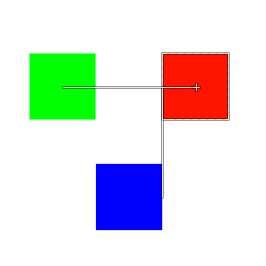

|

|
 |
| 5.29. Snap to Active Path |

|
5.31. Snap to Equidistance |
If this option is enabled, moving e.g. layers will snap it to the bounding box (edge or center) of other layers. This makes it easy to align them horizontally or vertically. Note that this is not restricted to layers, you can also use it with e.g. Paths.
Figure 16.48. Example of bounding box snapping

This example shows the red layer snapping horizontally to the center of the green layer and vertically to the right edge of the blue layer.